Predicting missing heights
It might be important to fill in missing heights (especially for dominant trees) in 2018. First I’ll explore a simple linear relationship between dbh and height increment. I’m only looking at live, unbroken redwood and Douglas-fir.
test_d <- d_l %>%
# add increment data
group_by(tree_id) %>%
mutate(
ht_inc_2 = nth(lead(ht) - ht, 3, order_by = year) / 5,
ht_inc_1 = nth(lead(ht) - ht, 2, order_by = year) / 5,
ht_13 = nth(ht, 3, order_by = year)) %>%
# only use unbroken live sese or psme from 2018
filter(
spp %in% c("SESE3", "PSMEM"),
year == "18",
status == 1,
!get_cond(2, 3)
) %>%
ungroup()
# fit model to each group to generate lables for plot
plot_groups <- function(
group = treatment,
response = ht_inc_2,
predictor = dbh,
by_spp = TRUE,
title,
pred = FALSE
) {
palette("Tableau 10")
x <- substitute(predictor)
y <- substitute(response)
form <- formula(bquote(.(y) ~ .(x)))
if (by_spp) {
dat <- group_by(test_d, group = {{group}}, spp)
} else {
dat <- group_by(test_d, group = {{group}})
}
mytext <- dat %>%
summarize(lm_eqn(lm(form, data = cur_data())))
if (by_spp) {
mytext <- pivot_longer(mytext, !c(group, spp)) %>%
arrange(group, name) %>%
mutate(
x = npc(dat[[x]], c(0, 0, .7, .7, .7, .7)),
y = npc(dat[[y]], c(1.1, 1, .1, 0, 1.1, 1))
)
} else {
mytext <- pivot_longer(mytext, !c(group)) %>%
arrange(group, name) %>%
group_by(group) %>%
mutate(
x = npc(dat[[x]], c(0, .7, .7)),
y = npc(dat[[y]], c(1.1,.1,1.1))
)
}
# Plot based on specified group and species (if indicated)
p <- if (by_spp) {
ggplot(
dat,
aes(x = {{predictor}},
y = {{response}},
fill = spp,
color = spp)
)
} else {
ggplot(dat, aes(x = {{predictor}}, y = {{response}}))
}
print(p +
geom_point(size = 1.3, shape = 16, alpha = .6) +
geom_smooth(method = "lm", alpha = .25) +
facet_wrap(~ group) +
geom_text(
data = mytext,
aes(x = x, y = y, label = value, hjust = 0),
parse = TRUE,
family = "mono",
fontface = "bold"
) +
labs(title = title) +
theme_bw() +
scale_color_manual(
values = palette(),
aesthetics = c("color", "fill")) +
guides(fill = guide_legend(override.aes = aes(label = ""))) +
if(pred == TRUE) {
geom_point(data = miss, aes(color = spp), shape = 16)
}
)
}Out of these models, the H40, H80 and L80 have a p < 0.05. In none of them is there a significant difference in slope (between species). Constants are significantly different for H40, L80.
plot_groups(title = "Height increment vs dbh")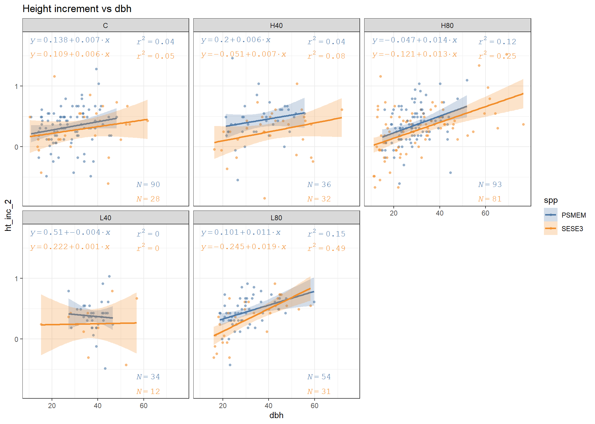
library(broom)
get_model_stats <- function(formula, grouping) {
test_d %>%
nest_by(group = {{grouping}}) %>%
mutate(
mod = list(lm(formula, data = data)),
summary = list(tidy(mod)),
pf = pf(
summary(mod)$fstatistic[1],
summary(mod)$fstatistic[2],
summary(mod)$fstatistic[3],
lower.tail = FALSE
)
) %>%
unnest(summary) %>%
select(-c(data, mod))
}stat <- get_model_stats(formula = ht_inc_2 ~ dbh * spp, grouping = treatment)
stat %>%
color_groups() %>%
row_spec(which(stat$p.value < .05), background = "MistyRose")| group | term | estimate | std.error | statistic | p.value | pf |
|---|---|---|---|---|---|---|
| C | (Intercept) | 0.1375585 | 0.1143752 | 1.2026948 | 0.2315864 | 0.1822137 |
| C | dbh | 0.0068448 | 0.0039640 | 1.7267242 | 0.0869259 | 0.1822137 |
| C | sppSESE3 | -0.0287703 | 0.1903294 | -0.1511608 | 0.8801160 | 0.1822137 |
| C | dbh:sppSESE3 | -0.0013134 | 0.0057836 | -0.2270885 | 0.8207616 | 0.1822137 |
| H40 | (Intercept) | 0.1996656 | 0.2169151 | 0.9204782 | 0.3607796 | 0.0449821 |
| H40 | dbh | 0.0064417 | 0.0058014 | 1.1103671 | 0.2709953 | 0.0449821 |
| H40 | sppSESE3 | -0.2510704 | 0.2910948 | -0.8625040 | 0.3916307 | 0.0449821 |
| H40 | dbh:sppSESE3 | 0.0009350 | 0.0073355 | 0.1274625 | 0.8989740 | 0.0449821 |
| H80 | (Intercept) | -0.0468195 | 0.1287197 | -0.3637320 | 0.7165101 | 0.0000000 |
| H80 | dbh | 0.0137452 | 0.0042626 | 3.2246324 | 0.0015126 | 0.0000000 |
| H80 | sppSESE3 | -0.0746243 | 0.1507183 | -0.4951240 | 0.6211519 | 0.0000000 |
| H80 | dbh:sppSESE3 | -0.0007062 | 0.0048376 | -0.1459815 | 0.8841089 | 0.0000000 |
| L40 | (Intercept) | 0.5103101 | 0.4361034 | 1.1701586 | 0.2485344 | 0.6484228 |
| L40 | dbh | -0.0035253 | 0.0112579 | -0.3131379 | 0.7557257 | 0.6484228 |
| L40 | sppSESE3 | -0.2881778 | 0.5279011 | -0.5458936 | 0.5880271 | 0.6484228 |
| L40 | dbh:sppSESE3 | 0.0042670 | 0.0137433 | 0.3104809 | 0.7577309 | 0.6484228 |
| L80 | (Intercept) | 0.1008937 | 0.1181852 | 0.8536919 | 0.3957934 | 0.0000002 |
| L80 | dbh | 0.0114392 | 0.0038244 | 2.9911383 | 0.0036814 | 0.0000002 |
| L80 | sppSESE3 | -0.3457901 | 0.1671822 | -2.0683429 | 0.0417983 | 0.0000002 |
| L80 | dbh:sppSESE3 | 0.0071266 | 0.0050994 | 1.3975317 | 0.1660699 | 0.0000002 |
stat <- get_model_stats(formula = ht_inc_2 ~ dbh + spp, grouping = treatment)
stat %>%
color_groups() %>%
row_spec(which(stat$p.value < .05), background = "MistyRose")| group | term | estimate | std.error | statistic | p.value | pf |
|---|---|---|---|---|---|---|
| C | (Intercept) | 0.1545358 | 0.0862016 | 1.7927252 | 0.0756458 | 0.0893222 |
| C | dbh | 0.0062278 | 0.0028746 | 2.1665172 | 0.0323351 | 0.0893222 |
| C | sppSESE3 | -0.0687429 | 0.0720991 | -0.9534507 | 0.3423616 | 0.0893222 |
| H40 | (Intercept) | 0.1785928 | 0.1393595 | 1.2815257 | 0.2045619 | 0.0174456 |
| H40 | dbh | 0.0070266 | 0.0035234 | 1.9942599 | 0.0503214 | 0.0174456 |
| H40 | sppSESE3 | -0.2156331 | 0.0856009 | -2.5190530 | 0.0142360 | 0.0174456 |
| H80 | (Intercept) | -0.0308234 | 0.0673480 | -0.4576736 | 0.6477679 | 0.0000000 |
| H80 | dbh | 0.0131969 | 0.0020099 | 6.5660360 | 0.0000000 | 0.0000000 |
| H80 | sppSESE3 | -0.0954426 | 0.0486307 | -1.9625991 | 0.0513152 | 0.0000000 |
| L40 | (Intercept) | 0.4001717 | 0.2509921 | 1.5943596 | 0.1181804 | 0.4561967 |
| L40 | dbh | -0.0006620 | 0.0063890 | -0.1036192 | 0.9179533 | 0.4561967 |
| L40 | sppSESE3 | -0.1273662 | 0.1009696 | -1.2614302 | 0.2139544 | 0.4561967 |
| L80 | (Intercept) | -0.0184106 | 0.0822052 | -0.2239594 | 0.8233460 | 0.0000001 |
| L80 | dbh | 0.0154475 | 0.0025444 | 6.0711651 | 0.0000000 | 0.0000001 |
| L80 | sppSESE3 | -0.1242865 | 0.0534947 | -2.3233436 | 0.0226379 | 0.0000001 |
Now I’m combining treatments so we only have a C, H, and L. Again slopes are not significantly different and neither are constants between species.
# Now I'll combine treatments so we just have a H, L and C
plot_groups(str_extract(treatment, "C|H|L"), title = "Height increment vs dbh")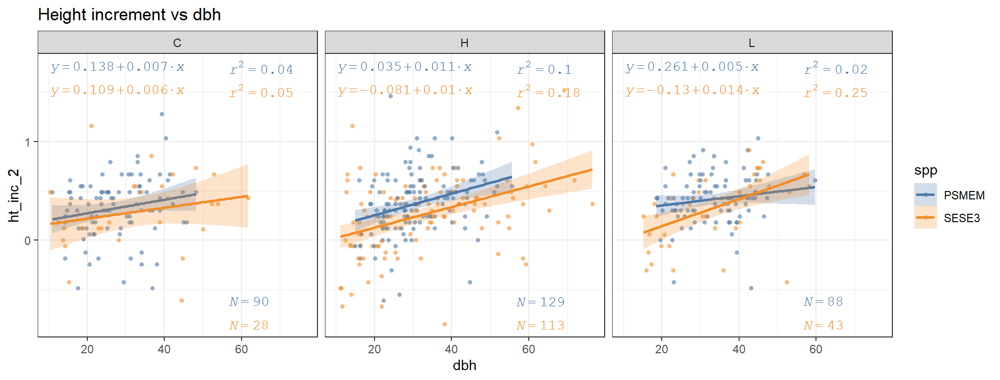
# do ancova, look at interaction first and then see if
# y-intercepts are any different between models.
stat <- get_model_stats(
formula = ht_inc_2 ~ dbh * spp,
grouping = str_extract(treatment, "C|L|H"))
stat %>%
color_groups() %>%
row_spec(which(stat$p.value < .05), background = "MistyRose")| group | term | estimate | std.error | statistic | p.value | pf |
|---|---|---|---|---|---|---|
| C | (Intercept) | 0.1375585 | 0.1143752 | 1.2026948 | 0.2315864 | 0.1822137 |
| C | dbh | 0.0068448 | 0.0039640 | 1.7267242 | 0.0869259 | 0.1822137 |
| C | sppSESE3 | -0.0287703 | 0.1903294 | -0.1511608 | 0.8801160 | 0.1822137 |
| C | dbh:sppSESE3 | -0.0013134 | 0.0057836 | -0.2270885 | 0.8207616 | 0.1822137 |
| H | (Intercept) | 0.0352369 | 0.1044112 | 0.3374822 | 0.7360509 | 0.0000000 |
| H | dbh | 0.0109561 | 0.0032260 | 3.3962175 | 0.0008005 | 0.0000000 |
| H | sppSESE3 | -0.1157410 | 0.1273125 | -0.9091092 | 0.3642122 | 0.0000000 |
| H | dbh:sppSESE3 | -0.0005100 | 0.0037783 | -0.1349888 | 0.8927348 | 0.0000000 |
| L | (Intercept) | 0.2612637 | 0.1187382 | 2.2003339 | 0.0295917 | 0.0002230 |
| L | dbh | 0.0046595 | 0.0034776 | 1.3398659 | 0.1826814 | 0.0002230 |
| L | sppSESE3 | -0.3908625 | 0.1698028 | -2.3018619 | 0.0229711 | 0.0002230 |
| L | dbh:sppSESE3 | 0.0090246 | 0.0048554 | 1.8586824 | 0.0653870 | 0.0002230 |
stat <- get_model_stats(
formula = ht_inc_2 ~ dbh + spp,
grouping = str_extract(treatment, "C|L|H"))
stat %>%
color_groups() %>%
row_spec(which(stat$p.value < .05), background = "MistyRose")| group | term | estimate | std.error | statistic | p.value | pf |
|---|---|---|---|---|---|---|
| C | (Intercept) | 0.1545358 | 0.0862016 | 1.7927252 | 0.0756458 | 0.0893222 |
| C | dbh | 0.0062278 | 0.0028746 | 2.1665172 | 0.0323351 | 0.0893222 |
| C | sppSESE3 | -0.0687429 | 0.0720991 | -0.9534507 | 0.3423616 | 0.0893222 |
| H | (Intercept) | 0.0467957 | 0.0596232 | 0.7848574 | 0.4333145 | 0.0000000 |
| H | dbh | 0.0105843 | 0.0016760 | 6.3152784 | 0.0000000 | 0.0000000 |
| H | sppSESE3 | -0.1319313 | 0.0426110 | -3.0961822 | 0.0021943 | 0.0000000 |
| L | (Intercept) | 0.1079034 | 0.0862012 | 1.2517623 | 0.2129392 | 0.0003239 |
| L | dbh | 0.0092890 | 0.0024500 | 3.7914141 | 0.0002297 | 0.0003239 |
| L | sppSESE3 | -0.0893818 | 0.0507159 | -1.7623995 | 0.0803888 | 0.0003239 |
I’ll look at what happens if I group by treatment intensity instead. Again, this does not seem to reveal any especially significant
# for comparison I'll combine treatment intensities instead
plot_groups(str_extract(treatment, "C|40|80"), title = "Height increment vs dbh")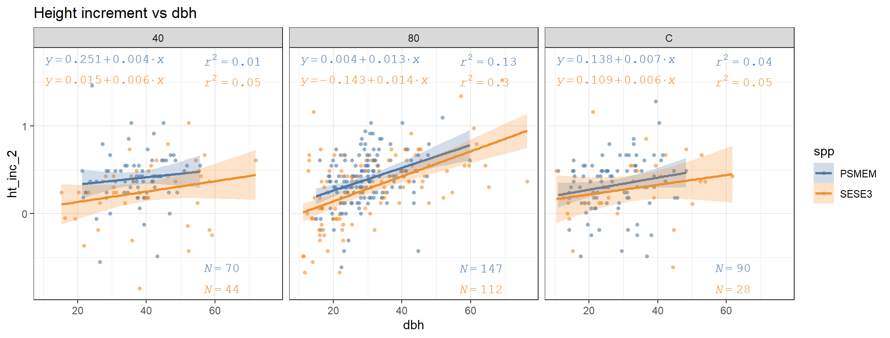
Perhaps a height model that includes more predictors would reveal a difference in response between treatments, our current models are not capturing much variance. I had the thought that we already have height data for our trees, shouldn’t that be a pretty good predictor of height in the next period? For that matter, I can also use height_inc from period 1 and current dbh as well and vary these all by treatment.
I’ll start with a full model for height and then remove variables (or interactions of variables) based on AIC.
mod1 <- lm(ht ~ (ht_13 + ht_inc_1 + dbh) * treatment * spp, data = test_d)
summary(mod1)##
## Call:
## lm(formula = ht ~ (ht_13 + ht_inc_1 + dbh) * treatment * spp,
## data = test_d)
##
## Residuals:
## Min 1Q Median 3Q Max
## -5.4896 -0.8061 0.0552 0.8873 4.8686
##
## Coefficients:
## Estimate Std. Error t value Pr(>|t|)
## (Intercept) 5.01910 1.62435 3.090 0.00213 **
## ht_13 0.74589 0.09559 7.803 4.47e-14 ***
## ht_inc_1 -0.46414 0.45546 -1.019 0.30874
## dbh 0.10521 0.03238 3.249 0.00125 **
## treatmentH40 4.24300 3.58843 1.182 0.23768
## treatmentH80 -5.76233 2.76028 -2.088 0.03741 *
## treatmentL40 3.94807 4.31142 0.916 0.36031
## treatmentL80 -7.84445 3.22317 -2.434 0.01534 *
## sppSESE3 -5.30221 2.21177 -2.397 0.01693 *
## ht_13:treatmentH40 -0.20800 0.20446 -1.017 0.30958
## ht_13:treatmentH80 0.31141 0.16195 1.923 0.05513 .
## ht_13:treatmentL40 -0.06641 0.19094 -0.348 0.72815
## ht_13:treatmentL80 0.45763 0.18775 2.437 0.01519 *
## ht_inc_1:treatmentH40 0.89096 1.11251 0.801 0.42365
## ht_inc_1:treatmentH80 -0.67477 0.82340 -0.819 0.41295
## ht_inc_1:treatmentL40 1.77614 1.31896 1.347 0.17880
## ht_inc_1:treatmentL80 -1.06393 1.05601 -1.008 0.31425
## dbh:treatmentH40 0.01668 0.05446 0.306 0.75957
## dbh:treatmentH80 -0.04845 0.04889 -0.991 0.32227
## dbh:treatmentL40 -0.08461 0.07022 -1.205 0.22890
## dbh:treatmentL80 -0.08478 0.05573 -1.521 0.12887
## ht_13:sppSESE3 0.31567 0.14735 2.142 0.03272 *
## ht_inc_1:sppSESE3 -0.22055 0.94443 -0.234 0.81546
## dbh:sppSESE3 -0.08776 0.05026 -1.746 0.08152 .
## treatmentH40:sppSESE3 -4.55168 4.08147 -1.115 0.26537
## treatmentH80:sppSESE3 5.28467 3.27393 1.614 0.10721
## treatmentL40:sppSESE3 4.86527 5.89491 0.825 0.40963
## treatmentL80:sppSESE3 7.32883 4.13221 1.774 0.07682 .
## ht_13:treatmentH40:sppSESE3 0.21419 0.25546 0.838 0.40223
## ht_13:treatmentH80:sppSESE3 -0.34762 0.20865 -1.666 0.09641 .
## ht_13:treatmentL40:sppSESE3 -0.53003 0.33452 -1.584 0.11382
## ht_13:treatmentL80:sppSESE3 -0.55474 0.27849 -1.992 0.04700 *
## ht_inc_1:treatmentH40:sppSESE3 0.96018 1.77084 0.542 0.58794
## ht_inc_1:treatmentH80:sppSESE3 0.44578 1.28181 0.348 0.72818
## ht_inc_1:treatmentL40:sppSESE3 3.10728 2.24920 1.382 0.16783
## ht_inc_1:treatmentL80:sppSESE3 1.84212 1.72140 1.070 0.28515
## dbh:treatmentH40:sppSESE3 -0.03005 0.07698 -0.390 0.69647
## dbh:treatmentH80:sppSESE3 0.09475 0.06503 1.457 0.14581
## dbh:treatmentL40:sppSESE3 0.13923 0.10571 1.317 0.18850
## dbh:treatmentL80:sppSESE3 0.16998 0.08536 1.991 0.04708 *
## ---
## Signif. codes: 0 '***' 0.001 '**' 0.01 '*' 0.05 '.' 0.1 ' ' 1
##
## Residual standard error: 1.516 on 439 degrees of freedom
## (499 observations deleted due to missingness)
## Multiple R-squared: 0.9066, Adjusted R-squared: 0.8983
## F-statistic: 109.2 on 39 and 439 DF, p-value: < 2.2e-16It turns out the varying first period increment by spp and treatment lowers AIC, so I’ll pull it out of the interaction. Pulling out dbh or ht_13 don’t appear to result in any significant improvement in AIC.
drop1(mod1)## Single term deletions
##
## Model:
## ht ~ (ht_13 + ht_inc_1 + dbh) * treatment * spp
## Df Sum of Sq RSS AIC
## <none> 1009.5 437.11
## ht_13:treatment:spp 4 23.4902 1033.0 440.13
## ht_inc_1:treatment:spp 4 6.1674 1015.7 432.02
## dbh:treatment:spp 4 17.8964 1027.4 437.52mod2 <- lm(ht ~ (ht_13 + dbh) * treatment * spp + ht_inc_1, data = test_d)
summary(mod2)##
## Call:
## lm(formula = ht ~ (ht_13 + dbh) * treatment * spp + ht_inc_1,
## data = test_d)
##
## Residuals:
## Min 1Q Median 3Q Max
## -5.4873 -0.8576 0.0384 0.9100 5.1691
##
## Coefficients:
## Estimate Std. Error t value Pr(>|t|)
## (Intercept) 5.051734 1.626162 3.107 0.00201 **
## ht_13 0.742492 0.094224 7.880 2.51e-14 ***
## dbh 0.106145 0.032173 3.299 0.00105 **
## treatmentH40 2.842605 3.201220 0.888 0.37503
## treatmentH80 -4.734739 2.600390 -1.821 0.06931 .
## treatmentL40 0.931693 3.768678 0.247 0.80485
## treatmentL80 -6.362000 2.981355 -2.134 0.03339 *
## sppSESE3 -5.156896 2.156440 -2.391 0.01720 *
## ht_inc_1 -0.399346 0.246303 -1.621 0.10564
## ht_13:treatmentH40 -0.111414 0.169761 -0.656 0.51197
## ht_13:treatmentH80 0.236302 0.144466 1.636 0.10261
## ht_13:treatmentL40 0.069153 0.165026 0.419 0.67538
## ht_13:treatmentL80 0.364688 0.169119 2.156 0.03158 *
## dbh:treatmentH40 -0.003325 0.049178 -0.068 0.94612
## dbh:treatmentH80 -0.032630 0.046317 -0.704 0.48150
## dbh:treatmentL40 -0.081496 0.070559 -1.155 0.24870
## dbh:treatmentL80 -0.071917 0.054552 -1.318 0.18807
## ht_13:sppSESE3 0.308109 0.143117 2.153 0.03186 *
## dbh:sppSESE3 -0.088958 0.050384 -1.766 0.07815 .
## treatmentH40:sppSESE3 -3.962350 3.695086 -1.072 0.28415
## treatmentH80:sppSESE3 4.485905 3.073585 1.460 0.14513
## treatmentL40:sppSESE3 3.043893 5.250048 0.580 0.56235
## treatmentL80:sppSESE3 5.109685 3.722791 1.373 0.17058
## ht_13:treatmentH40:sppSESE3 0.174761 0.225020 0.777 0.43778
## ht_13:treatmentH80:sppSESE3 -0.299655 0.188995 -1.586 0.11355
## ht_13:treatmentL40:sppSESE3 -0.354261 0.302401 -1.171 0.24202
## ht_13:treatmentL80:sppSESE3 -0.393498 0.233740 -1.683 0.09298 .
## dbh:treatmentH40:sppSESE3 -0.011574 0.073644 -0.157 0.87519
## dbh:treatmentH80:sppSESE3 0.085725 0.062972 1.361 0.17410
## dbh:treatmentL40:sppSESE3 0.136061 0.106431 1.278 0.20177
## dbh:treatmentL80:sppSESE3 0.142046 0.078435 1.811 0.07081 .
## ---
## Signif. codes: 0 '***' 0.001 '**' 0.01 '*' 0.05 '.' 0.1 ' ' 1
##
## Residual standard error: 1.529 on 448 degrees of freedom
## (499 observations deleted due to missingness)
## Multiple R-squared: 0.9031, Adjusted R-squared: 0.8966
## F-statistic: 139.1 on 30 and 448 DF, p-value: < 2.2e-16drop1(mod2)## Single term deletions
##
## Model:
## ht ~ (ht_13 + dbh) * treatment * spp + ht_inc_1
## Df Sum of Sq RSS AIC
## <none> 1047.4 436.75
## ht_inc_1 1 6.1461 1053.5 437.56
## ht_13:treatment:spp 4 19.5566 1067.0 437.62
## dbh:treatment:spp 4 14.3087 1061.7 435.25miss <- test_d %>% filter(is.na(ht), across(c(dbh, ht_13, ht_inc_1), ~ !is.na(.)))
miss$ht <- predict(mod2, miss)
plot(
test_d$dbh,
test_d$ht,
main = paste("Predicted and recorded heights for 2018", format(formula(mod2)), sep = "\n"),
xlab = "dbh",
ylab = "Height"
)
points(miss$dbh, miss$ht, col = "indianred", pch = 16, cex = .8)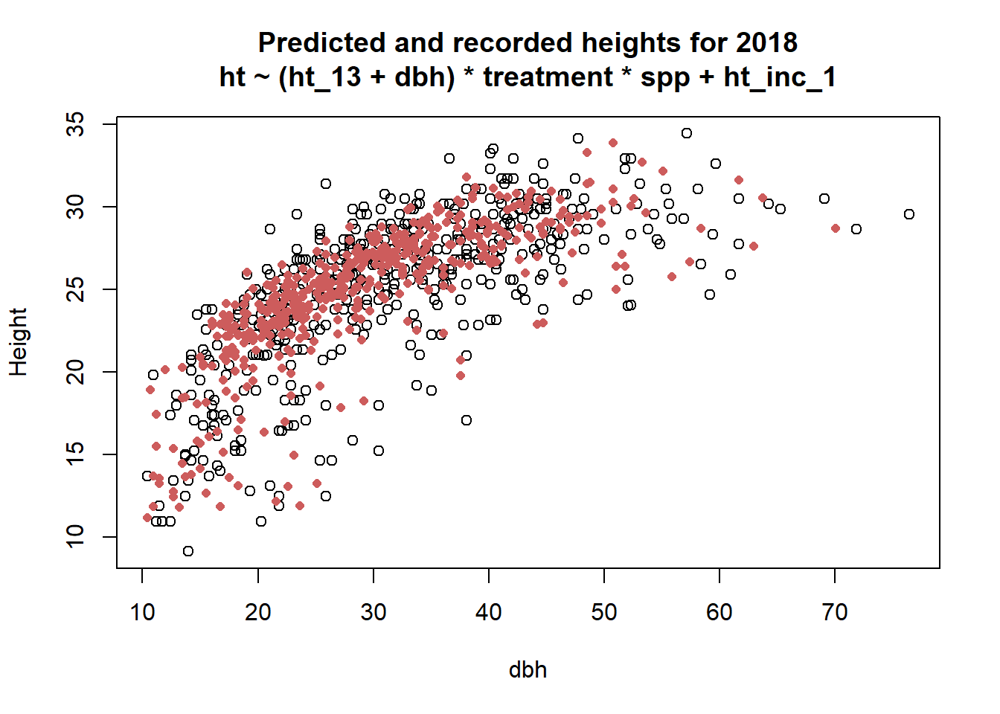
Testing another model. We have previous heights and previous increments, If I was going to predict heights by hand, that’s how I would do it.
mod3 <- lm(ht ~ ht_13*treatment*spp, data = test_d)
summary(mod3)##
## Call:
## lm(formula = ht ~ ht_13 * treatment * spp, data = test_d)
##
## Residuals:
## Min 1Q Median 3Q Max
## -5.4943 -0.8998 0.0824 0.8832 5.8985
##
## Coefficients:
## Estimate Std. Error t value Pr(>|t|)
## (Intercept) 1.93177 1.37972 1.400 0.1621
## ht_13 0.98744 0.05689 17.358 <2e-16 ***
## treatmentH40 2.87739 2.91452 0.987 0.3240
## treatmentH80 -3.36357 2.18882 -1.537 0.1250
## treatmentL40 5.11258 3.67753 1.390 0.1651
## treatmentL80 -4.04905 2.48538 -1.629 0.1040
## sppSESE3 -2.10316 1.88339 -1.117 0.2647
## ht_13:treatmentH40 -0.09260 0.11618 -0.797 0.4259
## ht_13:treatmentH80 0.14269 0.08920 1.600 0.1104
## ht_13:treatmentL40 -0.18567 0.14213 -1.306 0.1921
## ht_13:treatmentL80 0.18876 0.10126 1.864 0.0629 .
## ht_13:sppSESE3 0.08831 0.08120 1.088 0.2773
## treatmentH40:sppSESE3 -3.78829 3.39842 -1.115 0.2655
## treatmentH80:sppSESE3 1.91501 2.65115 0.722 0.4704
## treatmentL40:sppSESE3 -1.98431 4.96603 -0.400 0.6896
## treatmentL80:sppSESE3 1.09875 3.19967 0.343 0.7315
## ht_13:treatmentH40:sppSESE3 0.12510 0.14039 0.891 0.3733
## ht_13:treatmentH80:sppSESE3 -0.07228 0.11245 -0.643 0.5207
## ht_13:treatmentL40:sppSESE3 0.03134 0.20760 0.151 0.8801
## ht_13:treatmentL80:sppSESE3 -0.04142 0.13554 -0.306 0.7601
## ---
## Signif. codes: 0 '***' 0.001 '**' 0.01 '*' 0.05 '.' 0.1 ' ' 1
##
## Residual standard error: 1.605 on 471 degrees of freedom
## (487 observations deleted due to missingness)
## Multiple R-squared: 0.8891, Adjusted R-squared: 0.8846
## F-statistic: 198.8 on 19 and 471 DF, p-value: < 2.2e-16Here I’ll show the plots of how 2018 height varies with each of the predictors, starting with dbh, which is highly correlated with heights. There is a clear difference between the constants for redwood and douglas-fir. While most of the slopes seem parallel, Treatment H40 seems different and if we look at just that treatment, the interaction is significant.
plot_groups(response = ht, predictor = dbh, title = "Height vs dbh")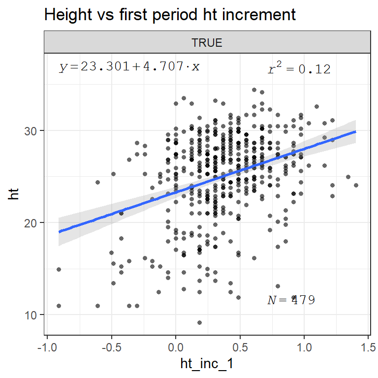
It would seem that when included in the entire model, the effect adding a dummy variable for the interaction between spp, dbh and treatment is not quite significant.
Next I’ll plot first period ht increment, this was included in the model but without any interactions, so the first plot shows its effect without any groupings. The second plot shows its relationship with spp and treatment groups, this variation is not included in the model.
plot_groups(
group = TRUE,
response = ht,
predictor = ht_inc_1, title = "Height vs first period ht increment",
by_spp = FALSE
)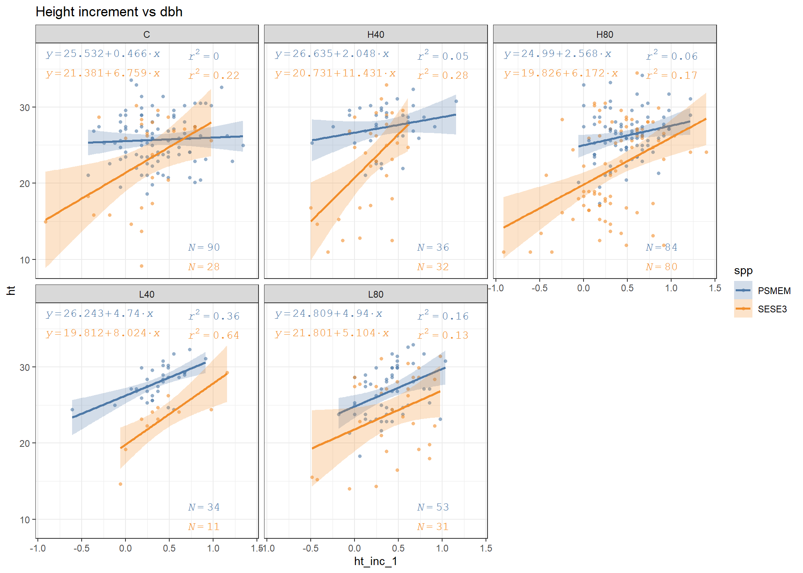
plot_groups(
response = ht,
predictor = ht_inc_1,
title = "Height vs first period ht increment\nwith interactions"
)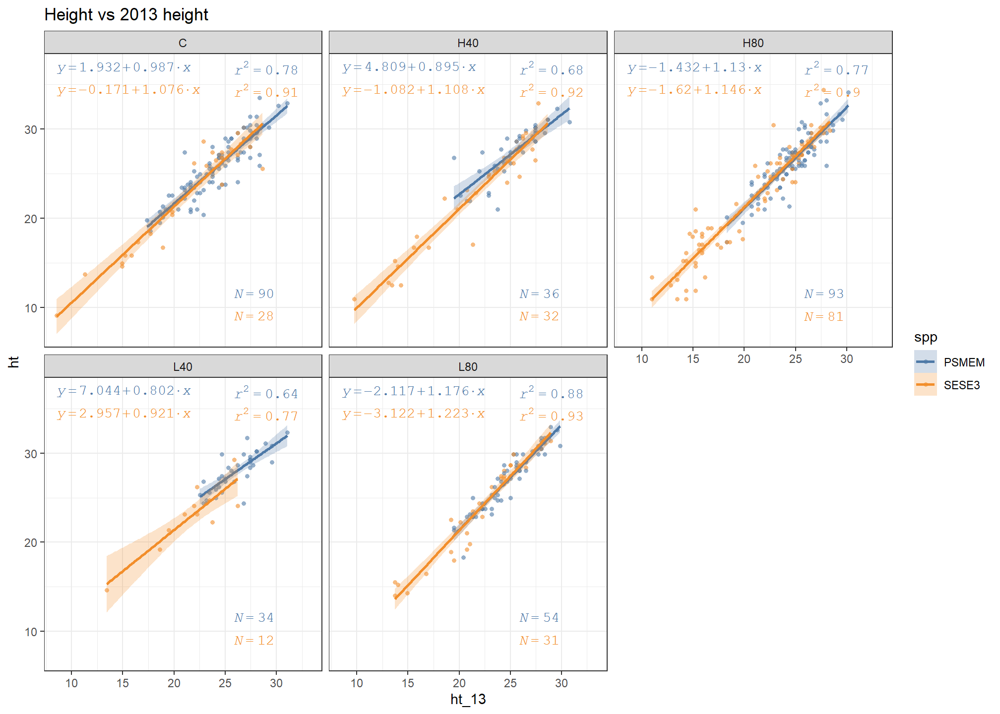
Finally, here is a plot of 2013 ht and 2018 heights. Because the model currently has this variable interacting with treatment and species, this is a more accurate representation of its effect (in the model). Its funny though, if I were to guess, it seems like this predictor is the most consistent across species and treatments.
plot_groups(response = ht, predictor = ht_13, title = "Height vs 2013 height")This is what it looks like if I group 2018 heights into thinned and unthinned groups.
test_d2 <- mutate(
test_d, treatment = if_else(
str_detect(treatment, "C"),
"unthinned",
"thinned"
)
)
mod4 <- lm(ht ~ 0 + ht_13:spp:treatment, data = test_d2)
summary(mod4)##
## Call:
## lm(formula = ht ~ 0 + ht_13:spp:treatment, data = test_d2)
##
## Residuals:
## Min 1Q Median 3Q Max
## -5.7858 -0.9317 0.0713 0.9658 5.9924
##
## Coefficients:
## Estimate Std. Error t value Pr(>|t|)
## ht_13:sppPSMEM:treatmentthinned 1.078411 0.004403 244.93 <2e-16 ***
## ht_13:sppSESE3:treatmentthinned 1.071188 0.005991 178.79 <2e-16 ***
## ht_13:sppPSMEM:treatmentunthinned 1.066489 0.007061 151.03 <2e-16 ***
## ht_13:sppSESE3:treatmentunthinned 1.068227 0.013877 76.98 <2e-16 ***
## ---
## Signif. codes: 0 '***' 0.001 '**' 0.01 '*' 0.05 '.' 0.1 ' ' 1
##
## Residual standard error: 1.625 on 487 degrees of freedom
## (487 observations deleted due to missingness)
## Multiple R-squared: 0.996, Adjusted R-squared: 0.9959
## F-statistic: 3.017e+04 on 4 and 487 DF, p-value: < 2.2e-16plot_groups(
predictor = ht_13,
response = ht,
group = if_else(str_detect(treatment, "C"), "unthinned", "thinned"),
title = "Height increment vs dbh\nthinned vs unthinned"
)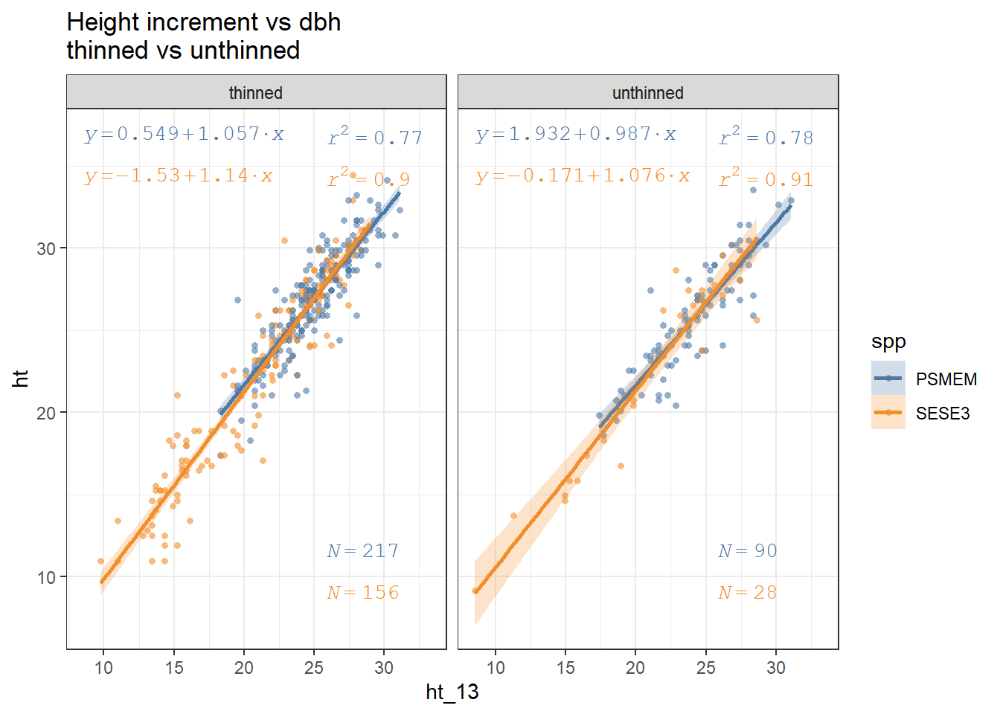
Non-linear height-dbh model
What if I just use a height/dbh model suggested by Eng, Hanus et al. and Curtis. And what if I combine 2013 and 2018 datasets? This contributes a lot more data. Maybe averaging across all treatments represents a conservative strategy in that any significant differences would likely not be due to the prediction.
palette("Set 2")
d <- p_h %>% filter(year %in% c("13", "18"), status == 1, !get_cond(2, 3), spp %in% c("SESE3", "PSMEM"))
d1 <- d %>% filter(spp == "SESE3")
d2 <- d %>% filter(spp == "PSMEM")
ht_mod1 <- nls(
ht ~ 1.3 + exp(b0 + b1 * I(dbh^b2)),
data = d1,
start = list(b0 = 5, b1 = -5, b2 = -.5)
)
ht_mod2 <- nls(ht ~ 1.3 + exp(b0 + b1 * I(dbh^b2)),
data = d2,
start = list(b0 = 5, b1 = -5, b2 = -.5)
)
nls_plot <- function(color = spp, facet = NULL, title, col = NULL) {
palette("Tableau 10")
if (is.null(col)) col <- 1:length(palette())
facet <- enquo(facet)
aesth <- aes(dbh, ht, color = {{color}})
p <- ggplot(arrange(d, spp), aesth) +
geom_jitter(height = .5, width = .5, alpha = .3) +
geom_smooth(
method = "nls",
formula = y ~ 1.3 + exp(b0 + b1 * I(x^b2)),
method.args = list(start = list(b0 = 5, b1 = -5, b2 = -.5)),
se = FALSE,
size = 1.3
) +
scale_color_manual(values = palette()[col]) +
labs(title = title) +
if(!is.null(facet)) facet_wrap(vars(!!facet))
print(p)
}title <- "Non linear model by species for 2013 and 2018\nAll treatments"
nls_plot(title = title)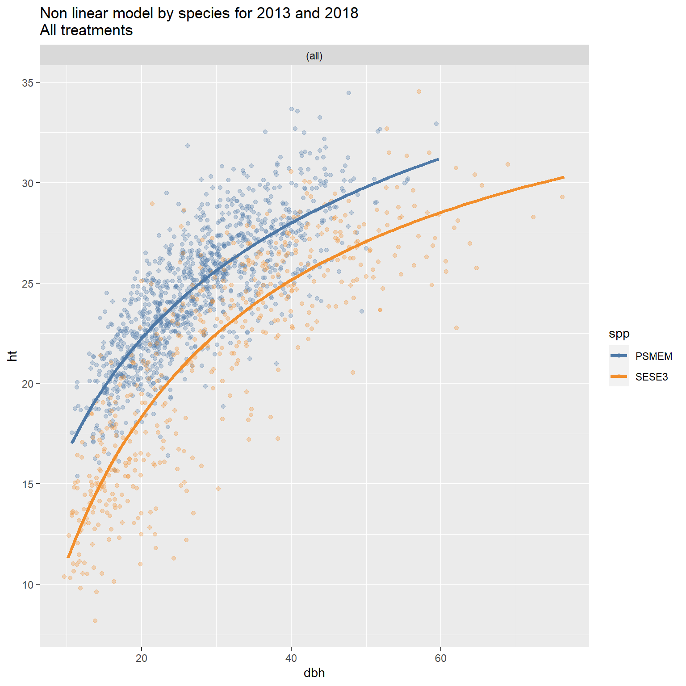
title <- "difference in fit between 2013 and 2018"
nls_plot(color = year, facet = spp, title = title, col = c(9, 7))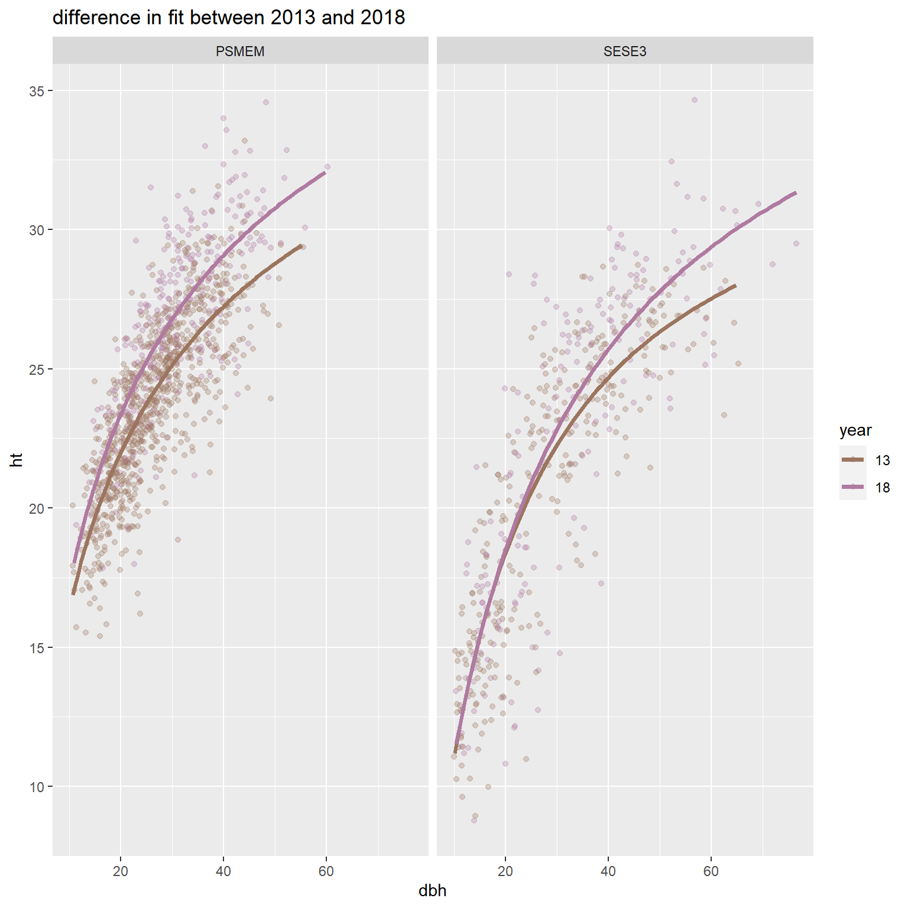
title <- "Difference in fit between treatments\nyears 2013 and 2018"
nls_plot(facet = treatment, color = spp, title = title)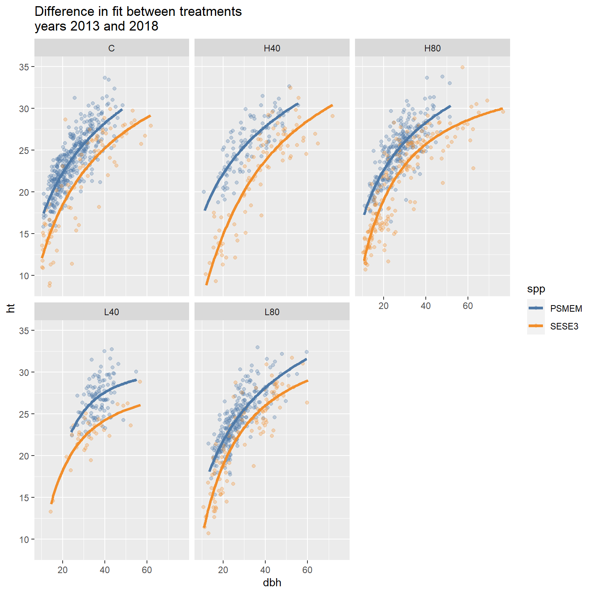
title <- "Differences between treatments\nyears 2013 and 2018"
nls_plot(color = treatment, facet = spp, title = title)